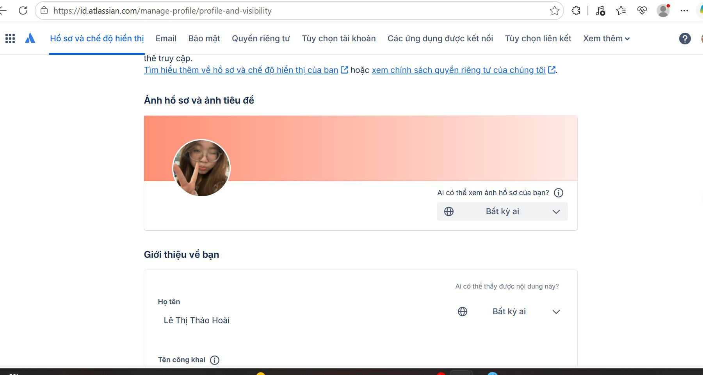
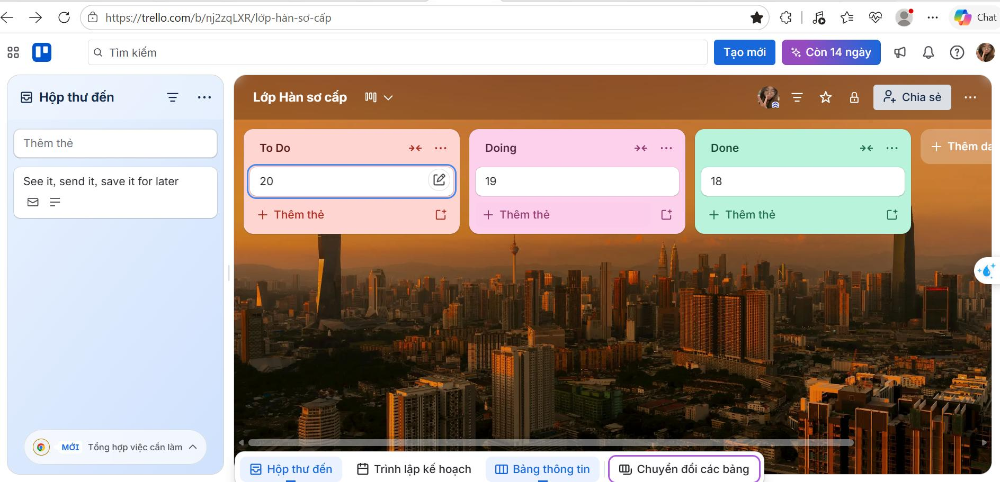
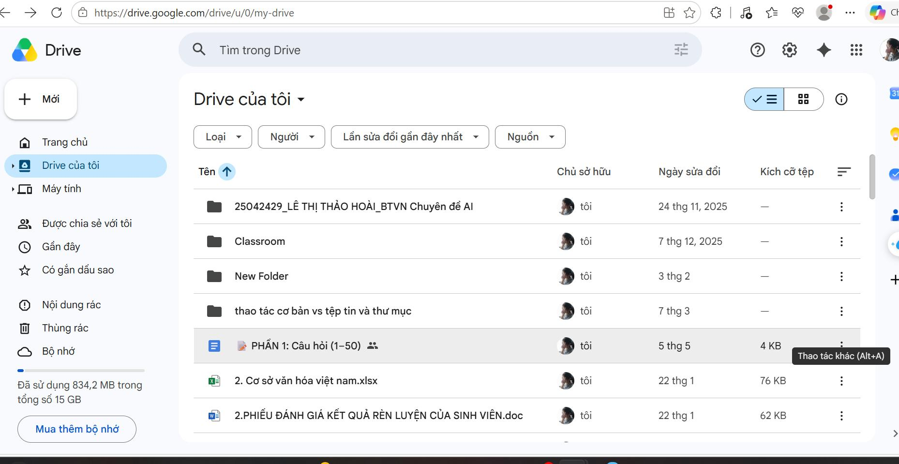
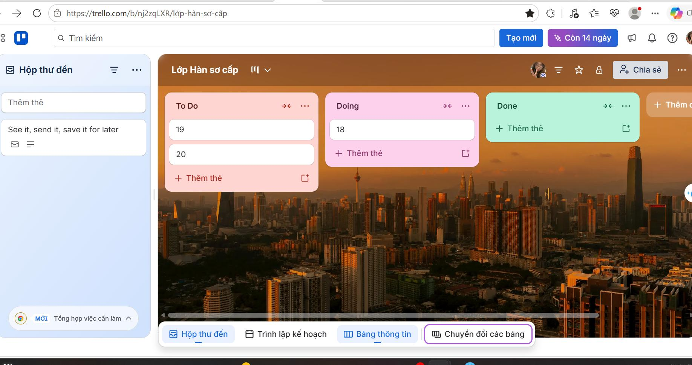

LÀM VIỆC NHÓM
Vai trò cá nhân trong dự án
Bài 4 tập trung vào trải nghiệm cá nhân khi sử dụng công cụ hợp tác trực tuyến. Nội dung được trình bày theo đúng logic công việc: thiết lập tài khoản, quản lý tác vụ, lưu trữ tài liệu và phối hợp với nhóm.
Trello
Tạo bảng, nhận task, theo dõi tiến độ và cập nhật trạng thái công việc.
Google Drive / Docs
Lưu file, chia sẻ thư mục và phối hợp chỉnh sửa tài liệu.
Discord
Trao đổi nhanh, đặt lịch và cập nhật công việc với các thành viên.
MINH CHỨNG ĐÚNG CHỨC NĂNG
Quá trình sử dụng công cụ
Thiết lập tài khoản cá nhân
Ảnh đầu tiên thể hiện tài khoản cá nhân được dùng trong không gian làm việc chung – đây là điều kiện quan trọng để chứng minh vai trò cá nhân trong dự án.

Quản lý tác vụ trên Trello
Minh chứng tiếp theo là bảng Trello với các cột công việc, cho thấy việc phân chia nhiệm vụ, theo dõi tiến độ và tổ chức công việc cá nhân trong nhóm.

Lưu trữ tệp trên Google Drive
Ảnh Google Drive thể hiện cách tổ chức tài liệu theo thư mục, giúp lưu trữ và chia sẻ file một cách khoa học trong suốt quá trình làm việc nhóm.

Cập nhật tiến độ và phối hợp
Ảnh cuối cho thấy việc cập nhật tiến độ trên Trello sau khi các tác vụ đã được sắp xếp, qua đó phản ánh quá trình theo dõi và điều phối công việc cá nhân.

ĐÁNH GIÁ
Hiệu quả của các công cụ
Ưu điểm
- Dễ phân công và theo dõi tiến độ.
- Tài liệu được chia sẻ tập trung.
- Giao tiếp nhanh, rõ ràng.
Thách thức
- Cần thống nhất cách đặt tên file.
- Phải cập nhật trạng thái thường xuyên.
- Cần kiểm soát quyền chia sẻ tài liệu.